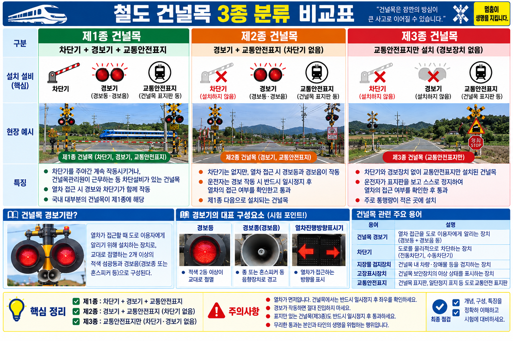

§1. 건널목 3종 — 분류기준과 안전설비
개념01-A종별 분류기준 (별표 1, 제19조제1항)
| 종류 | 총교통량 (철도교통량 × 도로교통량) |
|---|
| 제1종 | 500,000회 이상 |
| 제2종 | 300,000회 이상 ~ 500,000회 미만 |
| 제3종 | 300,000회 미만 |
※ 위험도가 높은 제2·3종 대상 건널목은 상위 등급으로 분류할 수 있다.
개념01-B종별 안전설비 (별표 2)
| 종류 | 차단기 | 경보기 | 관리원 |
|---|
| 제1종 | ○ (자동차단기) | ○ (경보기) | △ (별표 기준에 따라) |
| 제2종 | ✕ | ○ (경보기) | ✕ (무인·자동) |
| 제3종 | ✕ | ✕ | ✕ (안전표지만) |
★ 핵심 함정 — 제2종에는 차단기와 관리원이 없다! "경보기+안전표지"만. 문제에서 "2종에는 차단기 필요"라고 오답 제시.
이론 배경: 제1종이 가장 안전(차단기+경보기 필수, 관리원은 「철도시설의 기술기준」 별표 기준에 따라 배치). 제3종은 안전표지(표지판)만 설치.

VIS-026 | 건널목 3종 분류·설비 비교표
개념02역구내 건널목 제어 방식
역구내 건널목은 자동제어가 기본 (수동 기본 X). 부득이한 경우에만 수동으로 경보·차단 제어.
★ "역구내 건널목은 수동 제어가 기본" → 오답. 자동이 기본.
개념03건널목 보안설비 설치 고려 요소
아래 요소를 종합 판단하여 종류 결정:
- 열차 운행 빈도 (열차 횟수)
- 도로 교통량 (일일 통행 차량 수)
- 건널목의 길이 및 폭
- 전후 지형·시인성 (열차투시거리)
★ "열차 편성량(열차 길이)"은 건널목 보안설비 설치 타당성과 직접 관련 없음 → 고려 요소 제외
§6. 시험 함정 정리
1. "2종 건널목에도 차단기가 있어야 한다" → ✕ 2종=경보기+표지만, 차단기 없음
2. "역구내 건널목 = 수동 기본" → ✕ 자동이 기본
3. "차단기 하강 시간 = 12초 이하" → ✕ 하강=8±2초, 12초 이하는 상승 시간
4. "경보등 점멸 = 70~100회" → ✕ 경보등=40±10회 / 경보종이 70~100회
5. "전동차단기 구성요소 = 전압검지장치" → ✕ 마찰연축기·직류직권전동기·감속치차 3가지
6. "전동차단기 제어전압 허용 = ±10%" → ✕ 제어전압=0.9~1.2배 / ±10%는 코일 전류
7. "열차 편성량 = 건널목 보안설비 설치 고려 요소" → ✕ 고려 요소 아님
§8. 기출·예상 문제
기출 S등급 | 신호기출 #274
Q01. 건널목 전동차단기의 하강 시간 기준은?
① 5초 이하
② 8초 ± 2초
③ 12초 이하
④ 20초 이내
기출 A+등급 | 신호기출 #275
Q02. 건널목 직립형 경보등의 점멸 횟수 기준은?
① 분당 20 ± 10회
② 분당 40 ± 10회
③ 분당 60 ± 10회
④ 분당 70 ~ 100회
기출 A+등급 | 신호기출 #276
Q03. 건널목 경보종의 타종 횟수 기준은?
① 분당 40 ± 10회
② 분당 60 ~ 90회
③ 분당 70 ~ 100회
④ 분당 100 ~ 120회
기출 A+등급 | 신호기출 #277
Q04. 전동차단기 제어전압의 허용 범위는?
① 정격값의 0.8 ~ 1.1배
② 정격값의 0.9 ~ 1.2배
③ 정격값의 ± 10%
④ 정격값의 1.0 ~ 1.3배
기출 A등급 | 철도공학기출 #72
Q05. 건널목 종류 중 가장 안전한 것으로, 차단기와 건널목 경보기·신호기를 모두 갖춘 건널목은?
① 제1종 건널목
② 제2종 건널목
③ 제3종 건널목
④ 입체 건널목
철도왕 기출 | ch81 #16
Q06. 건널목의 정의로 틀린 것은?
① 제1종 건널목은 차단기, 경보기 및 건널목 안전표지를 설치하고 안내원을 배치한다
② 제2종 건널목은 경보기와 건널목 안전표지만 설치되어 있다
③ 제3종 건널목은 건널목 안전표지만 설치되어 있다
④ 제2종 건널목에는 반드시 차단기와 안내원이 있어야 한다
철도왕 기출 | ch81 #17
Q07. 건널목 보안설비 설치 시 고려하지 않는 요소는?
① 열차 운행 빈도(열차 횟수)
② 도로 교통량(하루 통행 차량 수)
③ 열차투시거리 및 열차 편성량
④ 건널목의 길이 및 폭
철도왕 기출 | ch7 #100
Q08. [운행안전 및 철도보호] 건널목 보안 시설에 관한 설명으로 옳지 않은 것은?
① 1종 건널목에는 자동 차단기와 경보기가 설치되어야 한다
② 2종 건널목에는 경보기만 설치되어야 한다
③ 3종 건널목에는 특별한 보안시설이 필요 없다
④ 건널목 통행 방법은 도로교통법에 따른다
철도왕 기출 | ch7 #101
Q09. [운행안전 및 철도보호] 철도 건널목의 종류에 따른 설명으로 옳은 것은?
① 1종: 차단기와 경보기, 2종: 경보기만, 3종: 표지만
② 1종: 경보기만, 2종: 차단기와 경보기, 3종: 표지만
③ 1종: 차단기만, 2종: 경보기만, 3종: 표지만
④ 1종: 차단기와 경보기, 2종: 표지만, 3종: 시설 없음
철도왕 신유형 | ch7 #154
Q10. [신유형] 철도안전법에 따른 건널목 사고 예방 조치로 옳지 않은 것은?
📌 LAW NOTE: 문제 출처의 "철도안전법" 표현은 교재 표현. 건널목 설비 기준의 실제 법적 근거는 「철도시설의 기술기준」(국토교통부 고시) 제69조·제71조 및 별표.
① 1종 건널목에는 자동차단기를 설치한다
② 건널목에는 경보장치를 설치한다
③ 사고 다발 건널목은 입체화를 추진한다
④ 2종 건널목에도 자동차단기를 의무 설치한다
정답 및 해설
Q01 ②
Q02 ②
Q03 ③
Q04 ②
Q05 ①
Q06 ④
Q07 ③
Q08 ③
Q09 ①
Q10 ④
Q01 [sig_274·S] 전동차단기 하강 시간
정답 ② 8초 ± 2초
전동차단기 하강 시간 = 8초 ± 2초 (6~10초 범위). 상승 시간 = 12초 이하.
③ 12초는 상승 시간. '20초 이내'는 규정에 없는 오답.
Q02 [sig_275·A+] 경보등 점멸 횟수
정답 ② 분당 40 ± 10회
직립형 경보등 점멸 = 분당 40 ± 10회 (30~50회). 경보종 타종수와 혼동 금지.
④ 70~100회는 경보종(벨) 타종 횟수.
Q03 [sig_276·A+] 경보종 타종 횟수
정답 ③ 분당 70 ~ 100회
경보종 타종수 = 분당 70~100회. 경보등 점멸(40±10회)과 구분.
① 40±10회는 경보등. ② 60~90회는 오답 수치.
Q04 [sig_277·A+] 전동차단기 제어전압
정답 ② 정격값의 0.9 ~ 1.2배
전동차단기 제어전압 = 정격값의 0.9~1.2배. 코일 전류 = ±10%.
③ ±10%는 경보종 코일 전류 허용 편차. 제어전압과 혼동 금지.
Q05 [eng_72·A] 가장 안전한 건널목
정답 ① 제1종 건널목
제1종 = 차단기+경보기 필수(가장 안전). 관리원은 「철도시설의 기술기준」 별표 기준에 따라 배치. 제2종 = 경보기만. 제3종 = 안전표지만.
원문 문제의 "신호기" 표현은 교재 원문 표현. 현행 기준상 제1종 핵심 설비는 차단기+경보기이며 관리원을 필수 구성 요건으로 혼동하지 말 것. 1종>2종>3종 안전 순.
Q06 [rk_ch81_16] 건널목 정의 틀린 것
정답 ④ 제2종 건널목에는 반드시 차단기와 안내원이 있어야 한다
제2종 = 경보기+안전표지만. 차단기·안내원 없음. ①③는 옳음.
제2종을 1종처럼 설명한 선택지 → 오답.
※ 문제의 '안내원'은 SOURCE 원문 표현이다. 현행 기준에서는 '관리원'을 사용하며, 제1종 건널목의 관리원은 건널목 여건과 복잡도에 따라 배치 여부를 정한다.
Q07 [rk_ch81_17] 보안설비 고려 불필요 요소
정답 ③ 열차투시거리 및 열차 편성량
열차투시거리는 고려하지만 열차 편성량(열차 길이)은 건널목 보안설비 설치와 직접 무관.
'열차 편성량'이 함께 묶여 있어 혼동. 투시거리는 고려, 편성량은 제외.
Q08 [rk_ch7_B5_08] 보안시설 옳지 않은 것
정답 ③ 3종 건널목에는 특별한 보안시설이 필요 없다
제3종에도 최소한의 안전표지(보안시설)는 필요하다. ①②는 옳음.
'특별한 보안시설 없다' → 완전히 무시하는 것처럼 표현해 오답 유도.
Q09 [rk_ch7_B5_09] 종류별 설명 옳은 것
정답 ① 1종: 차단기와 경보기, 2종: 경보기만, 3종: 표지만
3종 분류의 정확한 설비 조합. ②③④는 순서·설비 혼동.
Q10 [rk_ch7_NEW_26] 건널목 사고예방조치 옳지 않은 것
정답 ④ 2종 건널목에도 자동차단기를 의무 설치한다
자동차단기는 1종에만 의무 설치. 2종 = 경보기만. (실제 법적 근거: 「철도시설의 기술기준」 제69조·제71조 및 별표)
①②③은 모두 옳은 조치. ④만 틀린 내용. 문제의 "철도안전법" 표현은 교재 원문이며, 세부 설비 기준은 「철도시설의 기술기준」에서 규정.